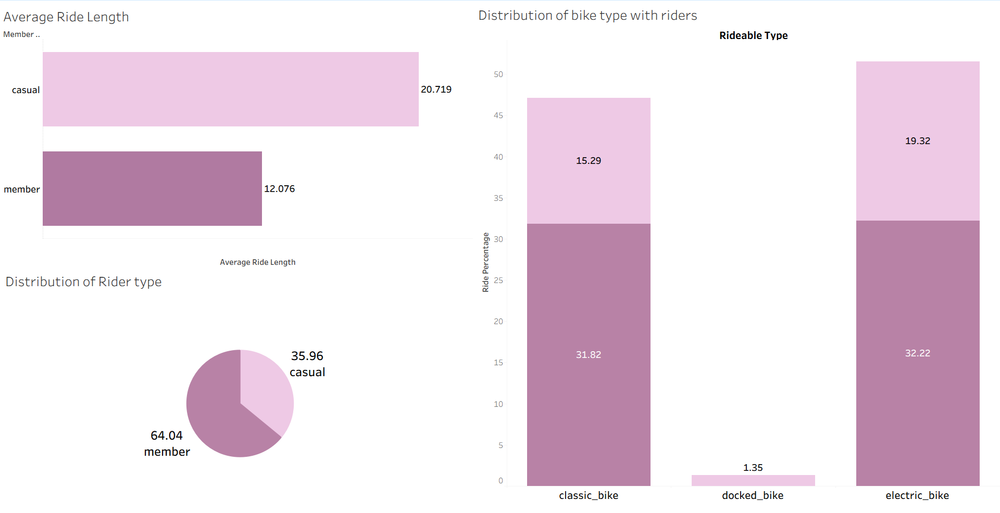
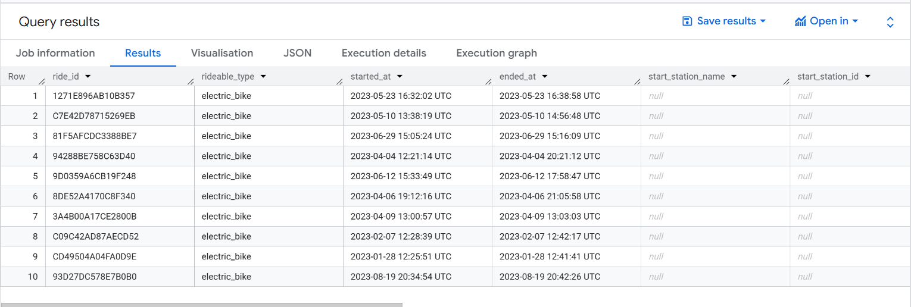
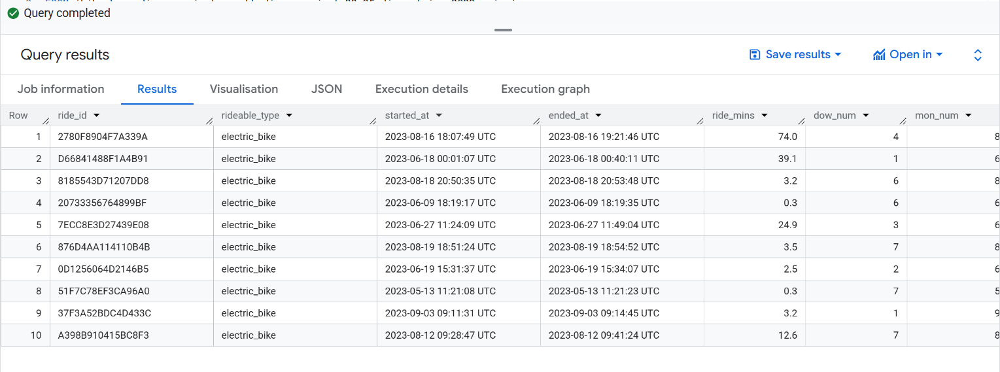

Project Overview
This project captures the dynamics and key performance indicators for Divvy bike share in Chicago to enhance membership by understanding the demographics of casual riders across time and location. The overall goal is to provide recommendations that encourage user engagement and casual-to-member conversions through targeted marketing strategies.
Tools
- Tableau
- Google Spreadsheets
- Google BigQuery
- Python
Data Sources
Trip records were extracted via Python from the Divvy Trip Data source, targeting the January–December 2023 datasets (1M+ rows).
Extract, Load, Transform
Given the data volume, Google BigQuery hosted the ELT pipeline. Monthly CSVs were integrated from Google Drive, combined with UNION operations, and validated for misspellings, extreme ride durations (greater than 1440 minutes), and null values. Derived columns captured ride duration in minutes plus day-of-week and month indicators.
Exploratory Data Analysis
- Electric bikes dominate: 19.32% of casual rides and 32.22% of member rides.
- Members account for 64.06% of total rides; casual riders contribute 35.6%.
- Average ride length is longer for casual riders (20.71 minutes) than members (12.07 minutes).

Interactive Tableau Dashboard
The Tableau Public workbook provides a guided story covering ridership trends, bike type mix, top stations, and opportunities to convert casual riders. If the embed does not load, open the dashboard directly.
Merging All Source Data in BigQuery
CREATE OR REPLACE TABLE `bikeshare-divvy-project-sumukh.divvy_project_23_25.all_2023_divvy_trips` AS
(
SELECT * FROM `bikeshare-divvy-project-sumukh.divvy_project_23_25.202301-divvy-tripdata`
UNION ALL
SELECT * FROM `bikeshare-divvy-project-sumukh.divvy_project_23_25.202302-divvy-tripdata`
UNION ALL
SELECT * FROM `bikeshare-divvy-project-sumukh.divvy_project_23_25.202303-divvy-tripdata`
UNION ALL
SELECT * FROM `bikeshare-divvy-project-sumukh.divvy_project_23_25.202304-divvy-tripdata`
UNION ALL
SELECT * FROM `bikeshare-divvy-project-sumukh.divvy_project_23_25.202305-divvy-tripdata_1`
UNION ALL
SELECT * FROM `bikeshare-divvy-project-sumukh.divvy_project_23_25.202305-divvy-tripdata_2`
UNION ALL
SELECT * FROM `bikeshare-divvy-project-sumukh.divvy_project_23_25.202306-divvy-tripdata_1`
UNION ALL
SELECT * FROM `bikeshare-divvy-project-sumukh.divvy_project_23_25.202306-divvy-tripdata_2`
UNION ALL
SELECT * FROM `bikeshare-divvy-project-sumukh.divvy_project_23_25.202307-divvy-tripdata_1`
UNION ALL
SELECT * FROM `bikeshare-divvy-project-sumukh.divvy_project_23_25.202307-divvy-tripdata_2`
UNION ALL
SELECT * FROM `bikeshare-divvy-project-sumukh.divvy_project_23_25.202308-divvy-tripdata_1`
UNION ALL
SELECT * FROM `bikeshare-divvy-project-sumukh.divvy_project_23_25.202308-divvy-tripdata_2`
UNION ALL
SELECT * FROM `bikeshare-divvy-project-sumukh.divvy_project_23_25.202309-divvy-tripdata_1`
UNION ALL
SELECT * FROM `bikeshare-divvy-project-sumukh.divvy_project_23_25.202309-divvy-tripdata_2`
UNION ALL
SELECT * FROM `bikeshare-divvy-project-sumukh.divvy_project_23_25.202310-divvy-tripdata_1`
UNION ALL
SELECT * FROM `bikeshare-divvy-project-sumukh.divvy_project_23_25.202310-divvy-tripdata_2`
UNION ALL
SELECT * FROM `bikeshare-divvy-project-sumukh.divvy_project_23_25.202311-divvy-tripdata`
UNION ALL
SELECT * FROM `bikeshare-divvy-project-sumukh.divvy_project_23_25.202312-divvy-tripdata`
);Output:

Data Transformation
CREATE OR REPLACE TABLE `bikeshare-divvy-project-sumukh.divvy_project_23_25.divvy_trips_2023_union` AS
SELECT
ride_id,
rideable_type,
started_at,
ended_at,
ROUND(TIMESTAMP_DIFF(ended_at, started_at, SECOND) / 60, 1) AS ride_mins,
EXTRACT(DAYOFWEEK FROM started_at) AS dow_num,
EXTRACT(MONTH FROM started_at) AS mon_num,
start_station_name,
start_station_id,
end_station_name,
end_station_id,
start_lat,
start_lng,
end_lat,
end_lng,
member_casual
FROM `bikeshare-divvy-project-sumukh.divvy_project_23_25.all_2023_divvy_trips`;Output:

Data Filtering
CREATE OR REPLACE TABLE `bikeshare-divvy-project-sumukh.divvy_project_23_25.divvy_trip_datav3` AS
SELECT *
FROM `bikeshare-divvy-project-sumukh.divvy_project_23_25.divvy_trips_2023_union`
WHERE ride_mins > 0
AND ride_mins < 1440;Counts of Rides by Rider Type
To calculate the number of rides and rider-type share:
SELECT
member_casual,
COUNT(*) AS count_rides,
ROUND(COUNT(*) * 100 / SUM(COUNT(*)) OVER (), 2) AS percent
FROM `bikeshare-divvy-project-sumukh.divvy_project_23_25.divvy_trip_datav3`
GROUP BY member_casual
ORDER BY count_rides DESC;Output:
| Rider Type | Number of Rides | Percentage |
|---|---|---|
| Member | 3,653,901 | 64.04% |
| Casual | 2,051,373 | 35.96% |
Member Riders Count by Bike Category
SELECT
rideable_type,
COUNT(*) AS member_rides
FROM `bikeshare-divvy-project-sumukh.divvy_project_23_25.divvy_trip_datav3`
WHERE ride_mins BETWEEN 0 AND 1440
AND member_casual = 'member'
GROUP BY rideable_type;Output:
| Bike Type | Member Rides |
|---|---|
| Electric Bike | 1,838,288 |
| Classic Bike | 1,815,613 |
Casual Riders Count by Bike Category
SELECT
rideable_type,
COUNT(*) AS casual_rides
FROM `bikeshare-divvy-project-sumukh.divvy_project_23_25.divvy_trip_datav3`
WHERE ride_mins BETWEEN 0 AND 1440
AND member_casual = 'casual'
GROUP BY rideable_type;Output:
| Bike Type | Casual Rides |
|---|---|
| Electric Bike | 1,102,137 |
| Classic Bike | 872,447 |
| Docked Bike | 76,789 |
Bike Type Usage and Rider Type Percentages
Counts by rider type and bike category:
SELECT
member_casual,
rideable_type,
COUNT(1) AS total_rides,
ROUND(100 * COUNT(1) / SUM(COUNT(1)) OVER (), 2) AS ride_percentage,
COUNT(DISTINCT DATE(started_at)) AS total_unique_dates,
COUNT(DISTINCT started_at) AS total_unique_timelines
FROM `bikeshare-divvy-project-sumukh.divvy_project_23_25.divvy_trip_datav3`
GROUP BY member_casual, rideable_type
ORDER BY member_casual;Output:
| Rider Type | Bike Type | Total Rides | Ride Percentage | Unique Dates | Unique Timelines |
|---|---|---|---|---|---|
| Casual | Docked Bike | 76,789 | 1.35% | 242 | 75,856 |
| Casual | Classic Bike | 872,447 | 15.29% | 365 | 836,440 |
| Casual | Electric Bike | 1,102,137 | 19.32% | 365 | 1,059,560 |
| Member | Classic Bike | 1,815,613 | 31.82% | 365 | 1,713,587 |
| Member | Electric Bike | 1,838,288 | 32.22% | 365 | 1,744,248 |
The docked bike category operates for only 242 days, while the other bike types span the full year.
Round Trip Analysis
Round-trip detection compares start/end stations:
WITH RoundTrips AS (
SELECT
ride_id,
started_at,
ended_at,
member_casual,
ride_mins,
start_station_name,
end_station_name,
IF(start_station_name = end_station_name, 1, 0) AS is_round_trip
FROM `bikeshare-divvy-project-sumukh.divvy_project_23_25.divvy_trip_datav3`
)
SELECT
member_casual,
COUNT(1) AS count_rides,
SUM(is_round_trip) AS count_round_trip,
(ROUND(SAFE_DIVIDE(SUM(is_round_trip), COUNT(1)), 2) * 100) AS rate_round_percent,
COUNT(DISTINCT DATE(started_at)) AS count_dates
FROM RoundTrips
GROUP BY member_casual;Output:
| Rider Type | Number of Rides | Round Trips | Round Trip Percentage | Unique Dates |
|---|---|---|---|---|
| Casual | 2,051,373 | 147,752 | 7.00% | 365 |
| Member | 3,653,901 | 122,876 | 3.00% | 365 |
Average and Median Ride Length
SELECT
member_casual,
ROUND(AVG(ride_mins), 1) AS avg_ride_length,
ROUND(APPROX_QUANTILES(ride_mins, 2)[OFFSET(1)], 1) AS median_ride_length
FROM `bikeshare-divvy-project-sumukh.divvy_project_23_25.divvy_trip_datav3`
GROUP BY member_casual;Output:
| Rider Type | Average Ride Length (min) | Median Ride Length (min) |
|---|---|---|
| Casual | 20.7 | 11.7 |
| Member | 12.1 | 8.5 |
Monthly Analysis of Trip Data — Members
SELECT
mon_num AS month,
FORMAT_DATE('%B', DATE(started_at)) AS month_name,
COUNT(*) AS rides_taken,
ROUND(AVG(ride_mins), 2) AS avg_ride_length_member
FROM `bikeshare-divvy-project-sumukh.divvy_project_23_25.divvy_trips_2023_union`
WHERE member_casual = 'member'
GROUP BY mon_num, month_name
ORDER BY mon_num;Output:
| Month | Month Name | Rides Taken | Avg. Ride Length (min) |
|---|---|---|---|
| 1 | January | 150,293 | 10.36 |
| 2 | February | 147,429 | 10.72 |
| 3 | March | 196,477 | 10.44 |
| 4 | April | 279,305 | 11.70 |
| 5 | May | 370,646 | 13.04 |
| 6 | June | 418,388 | 13.20 |
| 7 | July | 436,292 | 13.69 |
| 8 | August | 460,563 | 13.77 |
| 9 | September | 404,736 | 13.15 |
| 10 | October | 360,042 | 12.15 |
| 11 | November | 264,126 | 11.41 |
| 12 | December | 172,401 | 11.45 |
Average ride length peaks in the summer months and begins to decline after October.
Day of the Week Analysis — Members
SELECT
weekday_name,
rides_taken,
avg_ride_length_member
FROM (
SELECT
FORMAT_DATE('%A', DATE(started_at)) AS weekday_name,
CAST(FORMAT_DATE('%u', DATE(started_at)) AS INT64) AS iso_dow,
COUNT(*) AS rides_taken,
ROUND(AVG(ride_mins), 2) AS avg_ride_length_member
FROM `bikeshare-divvy-project-sumukh.divvy_project_23_25.divvy_trips_2023_union`
WHERE member_casual = 'member'
GROUP BY weekday_name, iso_dow
)
ORDER BY iso_dow;Output:
| Weekday | Rides Taken | Avg. Ride Length (min) |
|---|---|---|
| Monday | 494,576 | 11.90 |
| Tuesday | 576,754 | 12.01 |
| Wednesday | 586,459 | 11.93 |
| Thursday | 589,590 | 12.02 |
| Friday | 531,599 | 12.48 |
| Saturday | 472,860 | 13.94 |
| Sunday | 408,860 | 13.91 |
Insights
- Members ride most frequently on weekdays but take shorter trips compared to weekends.
- Thursday sees the highest volume, while Saturday and Sunday deliver the longest ride durations.
- Patterns indicate weekday commuting and weekend leisure behavior.
Monthly Analysis of Trip Data — Casual Riders
SELECT
mon_num AS month,
FORMAT_DATE('%B', DATE(started_at)) AS month_name,
COUNT(*) AS rides_taken,
ROUND(AVG(ride_mins), 2) AS avg_ride_length_casual
FROM `bikeshare-divvy-project-sumukh.divvy_project_23_25.divvy_trips_2023_union`
WHERE member_casual = 'casual'
GROUP BY mon_num, month_name
ORDER BY mon_num;Output:
| Month | Month Name | Rides Taken | Avg. Ride Length (min) |
|---|---|---|---|
| 1 | January | 40,008 | 22.92 |
| 2 | February | 43,016 | 23.19 |
| 3 | March | 62,201 | 21.41 |
| 4 | April | 147,285 | 27.67 |
| 5 | May | 234,181 | 28.52 |
| 6 | June | 301,230 | 29.41 |
| 7 | July | 331,358 | 32.33 |
| 8 | August | 311,130 | 35.24 |
| 9 | September | 261,635 | 25.19 |
| 10 | October | 177,071 | 22.87 |
| 11 | November | 98,392 | 19.44 |
| 12 | December | 51,672 | 19.94 |
Insights
- Casual ride volumes and durations peak in July and August.
- Casual riders maintain longer average ride lengths than members throughout the year.
- Seasonality reflects leisure-driven usage focused on warmer months.
Day of the Week Distribution — Casual Riders
SELECT
weekday_name,
rides_taken,
avg_ride_length_casual
FROM (
SELECT
FORMAT_DATE('%A', DATE(started_at)) AS weekday_name,
CAST(FORMAT_DATE('%u', DATE(started_at)) AS INT64) AS iso_dow,
COUNT(*) AS rides_taken,
ROUND(AVG(ride_mins), 2) AS avg_ride_length_casual
FROM `bikeshare-divvy-project-sumukh.divvy_project_23_25.divvy_trips_2023_union`
WHERE member_casual = 'casual'
GROUP BY weekday_name, iso_dow
)
ORDER BY iso_dow;Output:
| Weekday | Rides Taken | Avg. Ride Length (min) |
|---|---|---|
| Monday | 234,828 | 27.72 |
| Tuesday | 246,224 | 25.09 |
| Wednesday | 249,166 | 24.26 |
| Thursday | 270,612 | 24.73 |
| Friday | 311,925 | 27.26 |
| Saturday | 410,706 | 32.14 |
| Sunday | 335,718 | 32.76 |
Insights
- Weekend ride lengths for casual users exceed weekday durations, highlighting leisure trips.
- Ride counts spike on weekends, confirming recreational demand.
- Casual trip lengths stay higher than member trips across the week.
Station-Level Aggregations
Four helper tables summarize station activity:
1. Count of rides taken by members from start station
CREATE TABLE divvy_project_23_25.start_station_count_members AS
SELECT
start_station_name AS station_name,
COUNT(*) AS number_of_member_rides
FROM `bikeshare-divvy-project-sumukh.divvy_project_23_25.divvy_trip_datav3`
WHERE start_station_name IS NOT NULL AND member_casual = 'member'
GROUP BY start_station_name
ORDER BY COUNT(*) DESC;2. Count of rides taken by members to end station
CREATE TABLE divvy_project_23_25.end_station_count_members AS
SELECT
end_station_name AS station_name,
COUNT(*) AS number_of_member_rides
FROM `bikeshare-divvy-project-sumukh.divvy_project_23_25.divvy_trip_datav3`
WHERE end_station_name IS NOT NULL AND member_casual = 'member'
GROUP BY end_station_name
ORDER BY COUNT(*) DESC;3. Count of rides taken by casual riders from start station
CREATE TABLE divvy_project_23_25.start_station_count_casual AS
SELECT
start_station_name AS station_name,
COUNT(*) AS number_of_casual_rides
FROM `bikeshare-divvy-project-sumukh.divvy_project_23_25.divvy_trip_datav3`
WHERE start_station_name IS NOT NULL AND member_casual = 'casual'
GROUP BY start_station_name
ORDER BY COUNT(*) DESC;4. Count of rides taken by casual riders to end station
CREATE TABLE divvy_project_23_25.end_station_count_casual AS
SELECT
end_station_name AS station_name,
COUNT(*) AS number_of_casual_rides
FROM `bikeshare-divvy-project-sumukh.divvy_project_23_25.divvy_trip_datav3`
WHERE end_station_name IS NOT NULL AND member_casual = 'casual'
GROUP BY end_station_name
ORDER BY COUNT(*) DESC;Most Popular Start Stations — Members
SELECT
start_station_name,
COUNT(*) AS number_of_member_rides
FROM `bikeshare-divvy-project-sumukh.divvy_project_23_25.divvy_trip_datav3`
WHERE ride_mins BETWEEN 0 AND 1440
AND member_casual = 'member'
AND start_station_name != 'null'
GROUP BY start_station_name
ORDER BY COUNT(*) DESC;Output:
| Start Station Name | Number of Member Rides |
|---|---|
| Clinton St & Washington Blvd | 26,162 |
| Kingsbury St & Kinzie St | 26,127 |
| Clark St & Elm St | 24,961 |
| Wells St & Concord Ln | 21,379 |
| Clinton St & Madison St | 20,566 |
| Wells St & Elm St | 20,369 |
| University Ave & 57th St | 20,001 |
| Broadway & Barry Ave | 18,929 |
| Loomis St & Lexington St | 18,870 |
| State St & Chicago Ave | 18,444 |
Insights
- Member rides cluster around central, high-traffic commuter stations.
- Top stations align with major transit hubs and employment centers.
Most Popular End Stations — Members
SELECT
end_station_name,
COUNT(*) AS number_of_member_rides
FROM `bikeshare-divvy-project-sumukh.divvy_project_23_25.divvy_trip_datav3`
WHERE ride_mins BETWEEN 0 AND 1440
AND member_casual = 'member'
AND end_station_name != 'null'
GROUP BY end_station_name
ORDER BY COUNT(*) DESC;Output:
| End Station Name | Number of Member Rides |
|---|---|
| Clinton St & Washington Blvd | 27,403 |
| Kingsbury St & Kinzie St | 26,337 |
| Clark St & Elm St | 24,827 |
| Wells St & Concord Ln | 22,216 |
| Clinton St & Madison St | 22,070 |
| Wells St & Elm St | 20,208 |
| University Ave & 57th St | 20,188 |
| Broadway & Barry Ave | 19,374 |
| State St & Chicago Ave | 18,993 |
| Loomis St & Lexington St | 18,569 |
Insights
- Destination patterns mirror departure hubs, indicating structured commute flows.
- Maintaining fleet balance at these nodes supports reliable member service.
Most Popular Start Stations — Casual Riders
SELECT
start_station_name,
COUNT(*) AS number_of_casual_rides
FROM `bikeshare-divvy-project-sumukh.divvy_project_23_25.divvy_trip_datav3`
WHERE ride_mins BETWEEN 0 AND 1440
AND member_casual = 'casual'
AND start_station_name != 'null'
GROUP BY start_station_name
ORDER BY COUNT(*) DESC;Output:
| Start Station Name | Number of Casual Rides |
|---|---|
| Streeter Dr & Grand Ave | 45,782 |
| DuSable Lake Shore Dr & Monroe St | 30,328 |
| Michigan Ave & Oak St | 22,583 |
| DuSable Lake Shore Dr & North Blvd | 20,274 |
| Millennium Park | 20,077 |
| Shedd Aquarium | 17,710 |
| Theater on the Lake | 16,303 |
| Dusable Harbor | 15,404 |
| Wells St & Concord Ln | 12,143 |
| Montrose Harbor | 11,949 |
Insights
- Casual riders begin trips near lakefront attractions and tourist hotspots.
- Marketing efforts can focus on leisure corridors to drive membership upgrades.
Most Popular End Stations — Casual Riders
SELECT
end_station_name,
COUNT(*) AS number_of_casual_rides
FROM `bikeshare-divvy-project-sumukh.divvy_project_23_25.divvy_trip_datav3`
WHERE ride_mins BETWEEN 0 AND 1440
AND member_casual = 'casual'
AND end_station_name != 'null'
GROUP BY end_station_name
ORDER BY COUNT(*) DESC;Output:
| End Station Name | Number of Casual Rides |
|---|---|
| Streeter Dr & Grand Ave | 49,278 |
| DuSable Lake Shore Dr & Monroe St | 27,520 |
| Michigan Ave & Oak St | 23,677 |
| DuSable Lake Shore Dr & North Blvd | 23,245 |
| Millennium Park | 22,197 |
| Theater on the Lake | 17,562 |
| Shedd Aquarium | 15,639 |
| Dusable Harbor | 13,550 |
| Wells St & Concord Ln | 11,918 |
| Montrose Harbor | 11,630 |
Insights
- Casual destinations reinforce the leisure narrative—focus on scenic areas.
- Dock and bike availability near tourist sites drives positive rider experience.
Recommendations
- Targeted marketing campaigns: Engage casual riders with weekend offers and emphasize membership savings.
- Promote membership benefits: Highlight discounted short trips and trial memberships to convert frequent riders.
- Enhance user experience: Streamline onboarding, clarify pricing, and improve bike availability insights in-app.
- Strategic bike placement: Stock high-demand commuter hubs and lakefront stations; add electric bike charging where required.
- Loyalty programs: Reward frequent riders with ride credits, discounts, or referral bonuses.
- Community engagement: Partner with local events and businesses; develop corporate membership plans.
- Feedback mechanisms: Capture rider sentiment to drive continuous service improvements.
Total Member Visits by Station
SELECT
start_count.station_name,
start_count.number_of_member_rides + end_count.number_of_member_rides AS total_member_visits
FROM divvy_project_23_25.start_station_count_members AS start_count
JOIN divvy_project_23_25.end_station_count_members AS end_count
ON start_count.station_name = end_count.station_name
ORDER BY total_member_visits DESC;Output (Top 10):
| Station Name | Total Member Visits |
|---|---|
| Clinton St & Washington Blvd | 53,565 |
| Kingsbury St & Kinzie St | 52,464 |
| Clark St & Elm St | 49,788 |
| Wells St & Concord Ln | 43,595 |
| Clinton St & Madison St | 42,636 |
| Wells St & Elm St | 40,577 |
| University Ave & 57th St | 40,189 |
| Broadway & Barry Ave | 38,303 |
| State St & Chicago Ave | 37,437 |
| Loomis St & Lexington St | 37,439 |
Insights
- Member traffic concentrates at central commuter corridors.
- Investing in capacity and promotions at these hubs maximizes engagement.
Total Casual Rider Visits by Station
SELECT
start_count.station_name,
start_count.number_of_casual_rides + end_count.number_of_casual_rides AS total_casual_visits
FROM divvy_project_23_25.start_station_count_casual AS start_count
JOIN divvy_project_23_25.end_station_count_casual AS end_count
ON start_count.station_name = end_count.station_name
ORDER BY total_casual_visits DESC;Output (Top 10):
| Station Name | Total Casual Visits |
|---|---|
| Streeter Dr & Grand Ave | 95,060 |
| DuSable Lake Shore Dr & Monroe St | 57,848 |
| Michigan Ave & Oak St | 46,260 |
| DuSable Lake Shore Dr & North Blvd | 43,519 |
| Millennium Park | 42,274 |
| Theater on the Lake | 33,865 |
| Shedd Aquarium | 33,349 |
| Dusable Harbor | 28,954 |
| Wells St & Concord Ln | 24,061 |
| Montrose Harbor | 23,579 |
Insights
- Lakefront and tourist destinations dominate casual rider demand.
- Positioning marketing, staffing, and bike stocking in these zones aids conversions.
My Key Takeaways & Final Thoughts
What stood out to me
- Members generate the majority of rides (~64%), yet casual riders record longer trips, underscoring commute vs leisure usage.
- Electric bikes are popular across both cohorts; member hotspots cluster downtown while casual riders gravitate toward the lakefront.
- Round trips are notably higher among casual users, aligning with sightseeing behavior.
What I’d recommend
- Targeted marketing: Incentivize casual riders with summer weekend offers and trial memberships.
- Highlight the perks: Communicate savings for frequent riders and consider loyalty programs.
- Bike placement: Maintain high bike availability at tourist attractions and commuter hubs.
- Community & feedback: Launch local events and keep feedback loops active to guide improvements.
Wrapping up
Understanding the distinct behaviors of members versus casual riders enables Divvy to tailor marketing, improve fleet allocation, and deliver a better experience. These insights support smarter decisions that make bike sharing more accessible, enjoyable, and sustainable for Chicago.